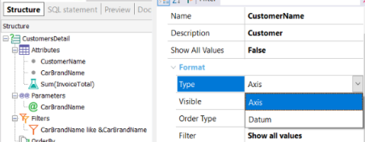

Defines the Output type used. Values
Scope Objects: Query Description
Defines how a query element will be displayed;Â it can be set as an Axis or directly as a Datum value. Run-time/Design-timeThis property applies both at run-time and at design-time. Samples
 How to apply changesTo apply the corresponding changes when the property value is configured, execute a Build with this Only of the object. AvailabilityThis property is available since GeneXus 17 upgrade 1. See Also
Axis property in Query Element |
| Backlinks | ||
| Axis and Visible property refactoring | Axis property in Query Element | Type property in Query Element |
| Visible property in Query Element |